ABSTRACT
The final qualifying work contains 52 pages, 2 hours, 28 figures, 25 sources.
PROJECTOR, CALIBRATION, MACHINE VISION, APPROXIMATION, PYTHON , OPENCV , SCIPY .
The object of research in this paper is the algorithm for automatic correction of the projector image.
Objective: development of an algorithm for automatic correction of a projector.
In the presented work, a software package for automating the calibration of projection equipment using methods of computational mathematics and machine vision was created.
The main result obtained is the created software package for automatic correction of the projector image.
The advantages of using this software package are a significant simplification of the process of adjusting the projector image, the ability to work with a non-flat surface and an increase in the quality of image display due to the exact correspondence of the projected image and the projection surface.
The system was
implemented using the Python programming language ,
the OpenCV machine vision library, and the Docker containerization
tool .
CONTENT
1. Basic aspects of correction of projection distortions
1.2 Correcting distortion for flat surfaces
1.4 Development of a correction algorithm for a non-flat surface
2. Implementation of the algorithm for automatic image correction
2.1 Creation of an experimental stand
2.2 Algorithm for calculating the nature of the projection surface
2.3 Setting the desired image format
2.4 Calculation of the required pre-distortion
2.5 Application of the correction algorithm for a non-flat surface
2.6 Organization of the software complex
INTRODUCTION
Today, multimedia technologies are developing faster and faster every day. Projectors play a special role among them - optical devices that allow you to display an image on a scattering surface. The key factor in the popularity of multimedia devices of this type was the ability to use almost any surface as a screen, and the reduction in the dimensions of projectors over time made them indispensable in everyday life.
It is important to note that all projection equipment requires some level of adjustment before use to achieve the desired image quality and minimize distortion due to the characteristics of the projector, the projection surface, and their relative positions.
Although many models of modern projectors currently have tools in their software for correcting distortions that occur when projecting onto a flat surface, the area of tasks associated with displaying images on non-standard surfaces remains without attention. Thus, the use of projection equipment in the field of augmented reality requires precise calibration of projection equipment to work with a wide range of surfaces, such as the surface of a cylinder, sphere, etc.
The relevance of this work is determined by the development of an algorithm for automatic correction of the projector image for working with a surface of unknown nature, which would significantly simplify the process of setting up projection equipment.
To achieve this goal, the following tasks must be solved:
1) to study the geometric transformations that occur with the image during projection;
2) consider existing approaches to correcting a projector image when working with a flat projection surface;
3) generalize the approaches considered for use with a projection surface specified in a general form;
4)
develop a software product that automatically corrects images for
a surface specified in general terms.
1. Basic aspects of correction of projection distortions
1.1 Projection distortions
The most common distortion when working with a projector is called the keystone effect . effect ) [13] – trapezoidal distortion that occurs when projecting onto an inclined plane and manifests itself as a distortion of the image size (Figure 1):
1) Typically the projector is placed on a table and faces upwards, so the image on the projection surface will be wider at the top than at the bottom;
2) similarly in the case of shifting the projector horizontally relative to the projection surface.
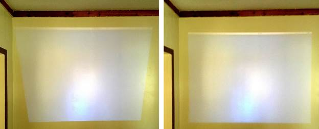
Figure 1 – Keystone distortion (left) and no distortion (right)
Most projection equipment has built-in software that can correct projective distortions [24] that occur when an image is projected onto a flat projection surface. Although approaches to correcting more complex distortions are still in the research stage, patents [22] are already appearing for algorithms and devices to solve such problems.
The amount of image distortion due to this effect can be roughly estimated [13] using the formula:
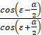( 1 )
where is the angle between the screen axis and the central beam of the projector;
– the width of the projector's focus.
One of the simplest ways to suppress the effect in question is to position the projector so that in formula (1) is equal to , which means that the projector is positioned strictly perpendicular to the projection plane. Although this solution is extremely effective, it is far from always applicable.
1.2 Correcting distortion for flat surfaces
At present, the vast majority of projection equipment models support settings for suppressing the trapezoid effect, which consist of preliminary image distortion by the built-in projector software in such a way that the combined effect of preliminary distortion and distortion that occurs during projection produces the desired resulting image. To do this, preliminary distortion is set as a combination of two parameters: for the vertical and horizontal axes.
It is worth noting that, although this correction method covers most of the tasks of the average user, it is still limited by distortion in the range 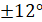[20].
The most popular approach among research works is to correct the projected image (Figure 2), based on preliminary distortion of the image before feeding it to the projector [1][12]. This approach allows for significantly greater flexibility in the transformations that can be done with the image, as well as changing the settings of this transformation directly without human intervention, and, therefore, significantly faster.
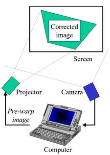
Figure 2 – Scheme with preliminary image distortion
A common element of algorithms that perform preliminary distortion of images to correct the resulting distortions is the use of feedback (Figure 3), where information about the current state of the system is fed to the algorithm’s input [7]:
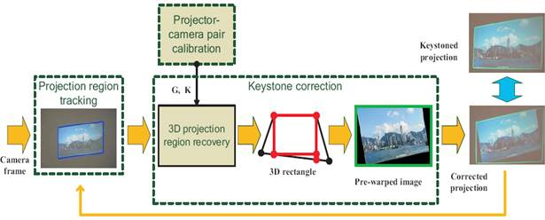
Figure 3 – An example of using feedback in the dynamic trapezoid correction algorithm
To obtain information about how well the current correction settings correspond to the desired ones and to generate a feedback signal, optical devices are used: digital cameras [14][18] and digital cameras with a depth sensor [1] and even built-in light sensors [21].
Thus, the problem of correcting the projector distortion can be considered as an optimization problem [10][18], where the objective function is the projection error [16], defined as:
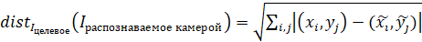( 2 )
where 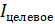is the target image;
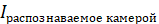– image recognized by the camera;
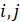– pixel coordinates;
Based on the above, the preliminary image distortion will be set as:
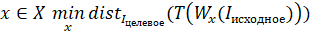( 3 )
where 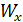is the image pre-distortion operator constructed using the parameters ;
– a set of possible sets of parameters ;
– a transformation that translates the points of the projected image into the points of the recognizable image.
In the considered works [1][12-14][20] the main method of specifying the pre-distortion operator is the use of a matrix representation [5-8].
The calculation of matrices for preliminary distortion is performed on the basis of projective transformations [9] that occur with the image during projection [2], defined by the homography matrix (4):
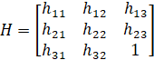 ( 4 )
The task of correcting projective distortion consists of calculating the inverse matrix 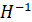for the homography matrix 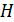using computational mathematics algorithms, among which the following are considered classical:
estimation of the homography matrix by singular points, based on knowledge of the transformation of the coordinates of a set of points;
2)estimation of the homography matrix when observing objects of a priori known shape, for example, if it is known that can be represented as a convex -gon, with 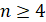.
1.3 Using non-flat surfaces
Based on the principles considered, applied in the field of automatic correction of the projector image, it is clear that existing algorithms are based on the assumption of the plane of the surface onto which the projection is carried out [15-19][22].
However, there is a class of problems where the algorithm lacks any a priori knowledge about the nature of the projection surface (Figure 4). Among the common variants of non-standard surfaces, one can distinguish the internal and external surfaces of such geometric figures as a cylinder, sphere or, for example, the wall of a house [3], and the most general variant of the projection surface can be called a simple surface, that is, a piece of a plane subjected to continuous deformations of tension, compression, bending.
There is also a class of tasks where it is necessary to “stitch” images from several projectors, for example, to increase the resulting resolution [4] or to create panoramic projections (Figure 4).

Figure 4 – Panoramic projection screen of the NTPro 5000 small vessel simulator
1.4 Development of a correction algorithm for a non-flat surface
In this paper we will consider a method for obtaining the desired image 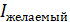in the absence of a priori knowledge about the nature of the surface. The result of the algorithm will be considered to be some operator 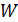, which will set a preliminary distortion of the image in such a way that the desired image will coincide with the image recognized by the camera 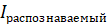.
Let us consider a system [25] consisting of a surface , a projector and a camera , where, according to Figure 5, the projection region is completely contained in the region recognized by the camera .
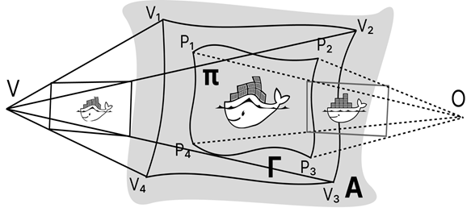
Figure 5 – Projector-camera-surface system
Let us denote 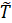the relationship between the points of the original image, the prototype, and the image obtained by the camera, the image, as:
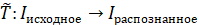 ( 5 )
where 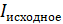is the original image;
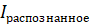- image recognized by the camera.
Note that if in the case of a flat surface the described transformation was specified by the homography matrix , then for a surface in general this transformation may not be specified analytically, but it is possible to use the methods of computational mathematics to approximate it [11].
Then the desired transformation 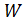, preliminarily introduced into the image before it is fed to the projector, will satisfy condition (6):
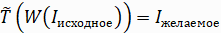( 6 )
And the transformation will be set as follows:
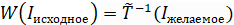( 7 )
where 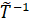is the relation connecting the recognized image with the points of the original image.
The key aspect of the developed algorithm is the construction of the operator , the accuracy of which will determine the overall accuracy of the calibration. In this paper, it is proposed to use machine vision methods to establish a connection between the points (8) of the original image and the image recognized by the camera 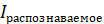, and to carry out measurements not for all points, but only for the nodes of a certain sufficiently dense structured rectangular computational grid:
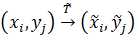 ( 8 )
where 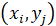is the point of the original image ;
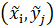– a point of the recognizable image ;
– coordinates of the measurement grid node.
The choice of the grid density (Figure 6) of the measurement is proposed to be made based on the nature of the projection surface, where the number of nodes should increase as the surface deviates from the plane.
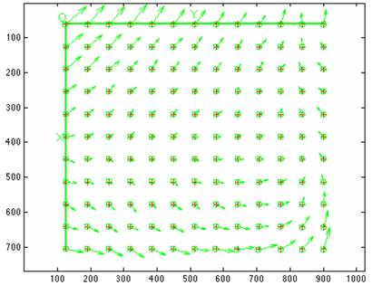
Figure 6 – Original coordinates (circles) and coordinates recognized by the camera (arrows)
Let us consider the transformation componentwise, as two mathematical functions 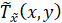and 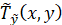, the values of which are known only at the measured points of the grid. Based on the hypothesis that the projection was made on a simple surface, then the functions and define some surfaces in three-dimensional space, and the measured points belong to these surfaces.
Therefore, for each function it is possible to construct some interpolation surface satisfying all measured points. And due to the fact that a structured rectangular computational grid was used in the measurement process, there is a wide class of algorithms for interpolating a function of many variables.
In this work, we will set the desired image by specifying the properties of the image's boundaries, namely, specifying the points through which the image's boundaries pass. It is worth noting that, although the method used is convenient for working with flat, cylindrical and spherical surfaces, it is not the only possible one.
As the boundaries of the desired image, we will set the corner points and points on the boundaries. We will construct interpolation polynomials for 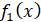both 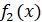horizontal boundaries and, similarly, 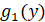vertical 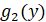boundaries (Figure 7).
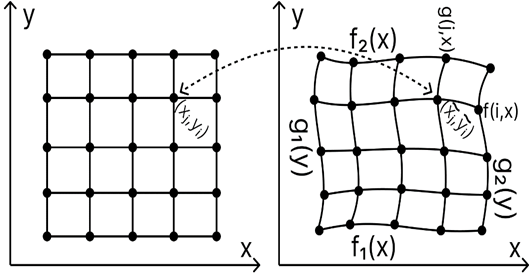
Figure 7 – Correspondence between the original image (left) and the desired image (right)
To establish a connection between points, we define a grid 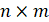constructed using weighted sums of boundary interpolation polynomials:
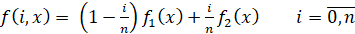( 9 )
where is the total number of horizontal grid stripes;
, 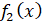– polynomials defining horizontal boundaries.
The vertical grid stripes are constructed similarly to the horizontal ones, and each node of the image grid will have coordinates that are the solution to the system of equations (10):
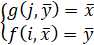 ( 10 )
where are the indices of horizontal and vertical stripes, respectively.
After calculating the grid of the desired image, we obtain the following correspondence:
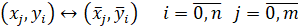( 11 )
where are the indices of the horizontal and vertical grid stripes, respectively;
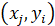– a point at a grid node of the original image;
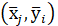 – a point in the grid node of the desired image.
Consider the point in the lower left corner of the original image 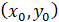. Note that when recognized by the camera, this point has coordinates 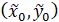, and in the desired image 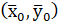. Suppose that there is a point 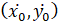in the original image that satisfies equality (12):
( 12 )
It is worth noting that in order to find the point in formula (12), this paper uses an approach using stochastic gradient descent, due to the fact that the calculation is a more complex task due to the irregular computational grid.
Then the desired pre-distortion operator must satisfy condition (13):
( 13 )
Let us apply this principle to the remaining points of the computational grid and obtain a set of correspondences (14):
( 14 )
where is the point of the original image;
– a point of a pre-distorted image.
To
define the pre-distortion operator, we use a component-wise approach, namely,
we construct two mathematical functions and , defining
interpolation surfaces according to the points obtained from (14). The use of
the pre-distortion operator comes down to the
fact that before sending the image to the projector, the image must be passed
through the operator , and unused
pixels of the image must be left black.
2. Implementation of the automatic image correction algorithm
2.1 Creation of an experimental stand
Since the software is being developed for projector calibration and the chosen algorithm requires the use of a camera, a test bench was created consisting of:
1) flat projection surface ;
2) Acer projector P 1100 C with a resolution of 800 by 600 pixels;
3) Logitech webcams WebCam C 505 e with a resolution of 1280 x 720 pixels.
Figure 8 – Experimental setup: projection surface (1), projector (2) and camera (3)
The projector and camera are positioned at an angle to the projection surface at a distance of approximately two meters so that the image undergoes trapezoidal distortion (Figure 8).
The experimental setup devices are connected to a computer, hereinafter referred to as the projector computer. The projector computer generates a video signal fed to the projector and also captures images from the webcam.
2.2 Algorithm for calculating the nature of the projection surface
By the nature of the projection surface we will understand the relation that describes the connection between the points of the original image and the points of the image recognized by the camera. To calculate the relation we will use an approach based on the machine vision algorithm.
So, to calculate at a point using the Python programming language and the OpenCV machine vision library, we will generate an image with dimensions of 800 by 600 pixels, consisting entirely of black color, and then place on it a white circle with a center at the point and a radius .
We output the generated image to the projector (Figure 9), and then read the image from the camera and note that in the recognized image the center of the circle lies at some other coordinates .
Figure 9 – Original image (left) and image recognized by the camera (right)
To automatically find the center of a circle in a recognized image, we convert the color image to black and white and then use the generalized Hough transform, a machine vision algorithm designed to find simple geometric shapes such as lines and circles in an image.
The Hough transform is based on the translation of the original image into the Hough parametric space, which, in the case of circles, will have a dimension of 3, according to the number of parameters required to define the circle:
( 15 )
where are the coordinates of the center of the circle;
– radius of the circle.
Consider a point in an image with coordinates with brightness , although infinitely many circles pass through it, satisfying equation (15), we introduce restrictions and obtain only a finite set of triplets of parameters:
( 16 )
where are the coordinates of the center of the circle;
– radius of the circle;
– image width in pixels;
– image height in pixels;
and – the minimum and maximum radius of the circles in the image.
From the point of view of software implementation, the Hough space is defined as a three-dimensional array, where the first dimension of the array has the size , the second - and the third - . This array acts as an accumulator, into whose cells with coordinates from the set the brightness of the pixel is added .
Figure 10 – Correspondence between image points (left) and a slice of the Hough space (right)
For each pixel of the image, the described calculations are performed, and the final step of the algorithm is to identify the cells with the maximum accumulated sum (Figure 10), which depends on the number and brightness of the pixels lying on the circle with the parameters of this cell.
Let's use the considered algorithm for calculations at grid points and get the following result (Figure 11):
Figure 11 – Result of measurement at grid points: ratio (left) and (right)
It is worth noting that the points belong to some smooth surface, although they are measured with some error. We will restore the surface using the least squares approximation. As an approximating function, we will use a polynomial of the 2nd degree:
( 17 )
where are the coefficients of the approximating polynomial.
To calculate the coefficients, we will use the library for the Python programming language with algorithms for scientific computing SciPy , in particular, the algorithm for polynomial approximation of the function:
( 18 )
Let us repeat the indicated actions with the transformation and display the surfaces defined by the obtained approximating polynomials in the form of grids (Figure 12):
Figure 12 – Approximating surfaces for (left) and (on the right)
We will save the obtained approximating and polynomial functions for the program memory for use in constructing the preliminary transformation operator.
It is important to note that the choice of the approximating function directly affects the quality of the approximation and should depend on the expected nature of the surface.
2.3 Setting the desired image format
To set the desired image, we will create an application with a user interface using the Python programming language and the Tkinter library , in which we will configure the output of the image from the camera by pressing the " Refresh " button. image » (Figure 13).
Figure 13 – User interface
Using the calculated coordinates, we calculate the coordinates for the corner points and the points at the midpoints of the sides of the original image, the so-called reference points. We define the boundaries of the image area as 4 quadratic polynomials passing through the designated points (Figure 14).
Figure 14 – Setting boundaries
We will designate a grid on the image, defined as a weighted sum of opposite edges , and also designate the grid nodes. We will allow the user to set the desired boundaries by dragging the control points in the user interface using a computer mouse (Figure 15).
Figure 15 – Image grid (left) and desired image grid (right)
2.4 Calculating the required pre-distortion
Based on the fact that there is a one-to-one correspondence between the grid nodes of the original image and the grid nodes of the desired image, we define the operator of preliminary image distortion as follows:
( 19 )
where is the -th grid node of the original image;
– -th node of the grid of the desired image image.
To calculate the points of the ratio (19), we will output a blue calibration grid through the projector. After the measurement, we will output the grid of the desired image. Note that without additional adjustment, the grid of the desired image coincides with the calibration grid (Figure 16):
Figure 16 – Calibration grid (blue) and desired image grid (black)
Let's make the necessary changes to the grid of the desired image so that, for example, the desired image is a rectangle (Figure 17).
Figure 17 – Calibration grid (blue) and modified grid of the desired image (black)
The construction of the operator will consist of finding a transformation for the original image that satisfies the following conditions:
( 20 )
where is a point in the grid node of the original image;
– the point to which the point should move .
( 21 )
where is the nodal point of the grid of the desired image.
Note that for each point located in the grid nodes of the desired image, it is necessary to search for a point that would turn (21) into a true equality. Due to the fact that the transformation is calculated in the form of approximating functions and , represented by second-degree polynomials, the calculation of which is relatively cheap from the point of view of computing resources, it is possible to use the methods of computational mathematics.
To find the desired point in (21), we will use the gradient descent algorithm, a numerical method for finding a local extremum using movement along the gradient of a certain function. In this case, we will define the Euclidean distance function from to the desired point, for which we will find the minimum, that is, such values of the arguments , the substitution of which into will give the desired point:
( 22 )
where and are polynomials that componentwise approximate the ratio ;
– a point of the desired image for which we are looking for a prototype.
To calculate the gradient of the error function at points, we will use numerical differentiation according to formulas (23) and (24):
( 23 )
( 24 )
where is a sufficiently small positive number.
The gradient descent algorithm consists of the following steps:
1) setting the initial approximation for the arguments of the function being minimized;
2) setting the calculation accuracy ;
3) setting the gradient descent rate ;
4) calculation ;
5) Checking the stop condition:
-
if at least one of the conditions is true: or or , then  we proceed to
step 4;
we proceed to
step 4;
- otherwise stop.
Figure 18 – Change in the value of the error function when changing the argument of the error function along the gradient
In this work, the parameters used for the gradient descent algorithm were , and the initial approximation , due to which fast convergence is achieved (Figure 18) with a moderate difference between the desired image and the image without preliminary distortions, and the average convergence with the indicated parameters is 150 iterations.
Figure 19 – Approximation of the preliminary image transformation (left) and (right)
For each nodal point of the grid of the desired image, we calculate the necessary preimage and obtain a set of point correspondences (Figure 19). We define componentwise as and , by analogy with . We approximate the relations and using second-degree polynomials based on the data obtained at the previous stage.
Let us apply the obtained approximation polynomials for preliminary distortion of the projector image (Figure 20):
Figure 20 – Calibration grid (left) and pre-distorted calibration grid (right)
Let us output the pre-distorted image of the calibration grid through the projector and note that the grid of the desired image and the image of the image coincide to a significant extent (Figure 21):
Figure 21 – Image with pre-distortion applied
2.5 Application of correction algorithm for non-flat surface
Let us consider the application of the developed algorithm for automatic correction of the projector image in the case of a non-flat projection surface. For this purpose, we will assemble an experimental stand simulating the geometry of the Transas NTPro 5000 small vessel simulator (Figure 22), the radius of the cylindrical projection surface of which is meters, the height of the surface is meters.
Figure 22 – Transas NTPro 5000 small vessel simulator: top view (left) and side view (right)
As a
projection surface we will use a rectangular sheet of cardboard,  one meter wide
and one meter high . We will
calculate the radius of the experimental stand based on the ratio of the height
of the projection surface of the simulator and the height of the cardboard:
one meter wide
and one meter high . We will
calculate the radius of the experimental stand based on the ratio of the height
of the projection surface of the simulator and the height of the cardboard:
( 25 )
We will obtain the radius of the experimental stand of a meter. We will calculate the parameters of the fastening for the cardboard according to the obtained radius :
Figure 23 – Calculation of the fastening for the experimental stand
where is the central point of the cylindrical experimental stand;
– the angle lying opposite the arc ;
– radius of the experimental stand;
– the midpoint of the chord , forming right triangles , .
Based on the obtained geometric construction, we obtain :
( 26 )
( 27 )
Let's calculate the chord as:
( 28 )
We will assemble an experimental setup according to the obtained curvature parameters from the engineering profile (Figure 24) and place the projector in such a way that the height of the projection surface is filled as much as possible with the projector image:
Figure 24 – Experimental stand made of engineering profile with fixed cardboard
We place the camera in front of the projection surface so that only the projection surface is included in the frame, output a calibration grid, measure the surface and output a grid of the desired image (Figure 25).
Figure 25 – Projection onto a cylindrical surface (left) and setting the desired image shape (right)
Let us derive the preliminary transformation obtained for a given desired image (Figure 26):
Figure 26 – Calculated transformation W for a cylindrical surface
Let's apply the resulting transformation to the calibration grid and output it through the projector (Figure 27):
Figure 27 – Pre-distorted calibration grid (left) and the recognized image corresponding to the desired image (right)
2.6 Organization of the software complex
The software package developed in this work is implemented according to a modular scheme (Figure 28) in such a way that the modules of the resulting system correspond to the principle of single responsibility, and the interaction between them is built according to clearly specified interfaces, synchronous and asynchronous.
Figure 28 – Organization of software package modules
The webcam module is a web server, a request to which captures an image from the webcam and returns this image, encoded using the base 64 algorithm. It is worth noting that the webcam module in the experimental setup is launched on the projector's computer, but in the future development of the used approach to calibrating projectors, the module with the camera can be launched on a separate computer, for example, on a smartphone.
The projector module connects to the Kafka message broker and subscribes to a queue ( topic ) with messages that correspond to the JSON format and contain images to be displayed via the projector. If the message also contains metadata for calibration, then after the image is displayed, a request is made to the webcam module, the result of which is sent to the queue of messages containing the image from the webcam and subject to recognition.
The calibration image generation module creates images with marker circles by coordinates according to the metadata received in the request and sends them to the queue for the projector.
The calibration image recognition module analyzes the image from the web camera to detect the coordinates of the calibration circles.
The calibration module is the main one in this software package. It controls the automatic calibration process: it generates tasks for other modules to measure the projection surface, performs approximation of transformations and preliminary transformation for images fed to the projector.
CONCLUSION
In the course of the work, the existing distortions that arise during image projection and the existing methods of their correction were considered, and an algorithm for automatic correction of the projector image was implemented using the Python programming language , the prospects for using the developed algorithm for solving problems of calibration of projection equipment when working with cylindrical surfaces were considered, and the following tasks were implemented:
1) The distortions that occur when projecting an image are considered;
2) The existing methods of automatic correction of the projector image are considered;
3) an algorithm for automatic correction of the projector image has been implemented in the Python programming language ;
4)
An experimental test of the developed algorithm with non-flat
projection surfaces was carried out.
LIST OF USED SOURCES
1) Senchenko, P.V. The problem of automatic calibration of the projector and depth sensor / P.V. Senchenko, D.A. Oznabihin, V.F. Tarasenko // Vestn. Tomsk. state University. Management, computing engineering and informatics. - 2016. - V.2, No.35.
2) Kholopov, I.S. Algorithm for correcting projective distortions in low-altitude surveys / I.S. Kholopov // KO. – 2017. – No. 2.
3) Lozhkin, A.V. Video mapping: how to project onto volumetric surfaces / A.V. Lozhkin // Bulletin of Moscow State University of Printing Arts. – 2012. – No. 9.
4) Samarin, A. Plug&Play technology for multi-projector display systems / A. Samarin // Components and technologies. – 2008. – No. 4.
5) Gorevoy, A.V. Methods of restoring the three-dimensional structure of objects for multichannel recording systems using structured illumination / A.V. Gorevoy, V.Ya. Kolyuchkin // Engineering Journal: Science and Innovations. – 2012. – No. 12.
6) Stepanov, D.N. Mathematical modeling and study of optimal configurations of a triangulation optical-electronic system for illuminating the space of objects with one strip / D.N. Stepanov // Bulletin of Bauman Moscow State Technical University. Series "Instrument Engineering". - 2022. - No. 1.
7) Lymarenko, Yu. A. Development of a computer model of a three-dimensional surface reconstruction system / Yu. A. Lymarenko, D. N. Tatievsky // TARP. - 2017. - No. 2.
8) Moskin, G.V. Synthesis of the perspective transformation matrix // Bulletin of the Syktyvkar University. / G.V. Moskin, V.L. Nikitenkov, G.A. Sitkarev / Series 1. Mathematics. Mechanics. Computer science. - 2013. - No17.
9) Glagolev, N.A. Projective geometry. / N.A. Glagolev – 1936.
10) Vasiliev, F.P. Optimization methods. / F.P. Vasiliev - 2002. - 824 s.
11) Laurent , P.-J. Approximation and optimization. / P.-J. Laurent - 1975. - 495 s.
12) Li, Z. An effective method for movable projector keystone correction / Zhaorong Li, Kin-Hong Wong, Yibo Gong, Ming-Yuen Chang // IEEE Transactions on Multimedia. – 2010. – №13.
13) Yadav, M. D. Keystone error correction method in camera-projector system to correct the projected image on planar surface and tilted projector / Mr Devvrat Yadav, Mr Shashikant Agrawal // International Journal of Computer Science & Engineering Technology. – 2013. – №4.
14) Anwar, H. Projector calibration for 3D scanning using virtual target images / Hafeez Anwar, Irfanud Din, Kang Park // International Journal of Precision Engineering and Manufacturing. – 2012. – №13.
15) Martynov, I. Projector calibration by “inverse camera calibration” / Ivan Martynov, Joni-Kristian Kamarainen, Lasse Lensu // Image Analysis. – 2011. – №17.
16) Moreno, D. Simple, accurate, and robust projector-camera calibration / Daniel Moreno, Gabriel Taubin. // Second International Conference on 3D Imaging, Modeling, Processing, Visualization & Transmission. – 2012.
17) Sukthankar, R. Smarter presentations: Exploiting homography in camera-projector systems / Rahul Sukthankar, Robert G. Stockton, Matthew D. Mullin // Proceedings Eighth IEEE International Conference on Computer Vision. – 2001. – №1.
18) Falcao, G. Plane-based calibration of a projector-camera system / Gabriel Falcao, Natalia Hurtos, Joan Massich // VIBOT. – 2008. – №9.
19) Madhkour, B. Image surround: Automatic projector calibration for indoor adaptive projection / Ben Madhkour, Ludovic Burczykowski, Matei Mancaş, Bernard Gosselin // Intelligent Technologies for Interactive Entertainment: 5th International ICST Conference. – 2013.
20) Sukthankar, R. Automatic keystone correction for camera-assisted presentation interfaces / Rahul Sukthankar, Matthew D. Mullin // Advances in Multimodal Interfaces. – 2000.
21) Lee, Johnny C. Automatic projector calibration with embedded light sensors / Johnny C. Lee // ACM symposium on User interface software and technology. – 2004.
22) Yang, Liming Practical and precise projector-camera calibration / Liming Yang, Jean-Marie Normand, Guillaume Moreau // IEEE International Symposium on Mixed and Augmented Reality (ISMAR). – 2016.
23) Patent No. US9344695B2 . Automatic projection image correction system, automatic projection image correction method, and non-transitory storage medium : filed 2012-09-11 : published 2013-03-21 / Takashi Shibata, Akihiko Iketani, Shuji Senda ; applicant And Patent holder NEC Corporation.
24) Patent No. EP 0756425 A 2 European Patent Office. Method and apparatus for correcting trapezoidal image distortion in a display projection system by modifying image signals : filed 24.07.1996 : published 29.01.1997 / Woo Seong-Jae Euijeongbu-shi, Kyeongki-Do ; applicant And Patent holder DEAWOO ELECTRONICS CO. LTD.
25) Chen, X. Accurate calibration for a camera–projector measurement system based on structured light projection / X. Chen, X. Juntong, J. Ye, S. Jin // Optics and Lasers in Engineering. – 2009.